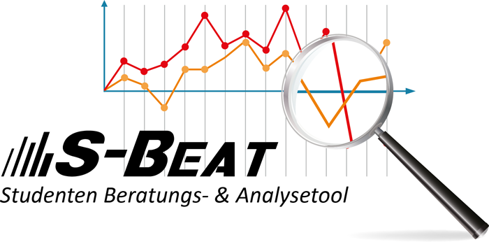

Studenten Beratungs- & Analysetool (S-BEAT)
Das Studenten Beratungs- & Analysetool S-BEAT ist ein Werkzeug, das sich insbesondere an Studiendekane sowie Mitarbeiter des Didaktikzentrums richtet. Es soll Möglichkeiten bieten, kritische Studienverläufe frühzeitig zu erkennen, um die Studenten gezielt beraten zu können und Gegenmaßnahmen zu ergreifen.
Es ist hilfreich, sich vor der ersten Benutzung eine Einführung geben zu lassen oder die Anleitung in der Dokumentation zu lesen.
